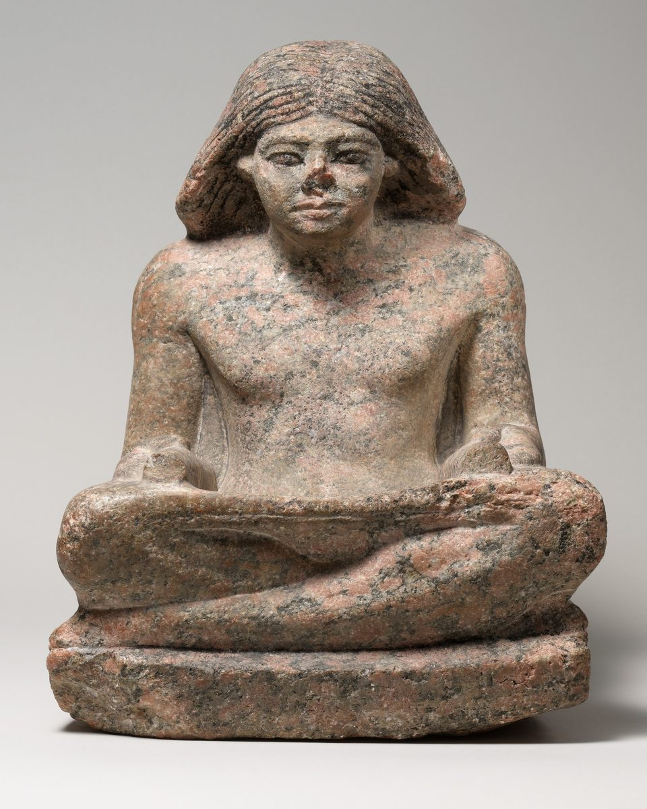

Unit 5 · Historical investigation · Lesson 6
Acknowledging sources: citations and the reference list
How do you show a reader exactly where every idea, quotation and picture came from, so that they can check it?
Year 11 Ancient History · Present with → or space · Read on a phone with R

Connect · 3 minutes · books closed · everyone writes · press K for the timer
From last lesson: patchwriting
What is patchwriting, and how do you avoid it?
Then compare your line with a partner’s, and fix one thing.
Patchwriting: swapping synonyms into a source’s sentence; still plagiarism, because the words are changed but the structure is still the source’s. Avoid it by closing the source, writing from your own notes in your own words and structure, and adding the citation.
Even a perfect paraphrase needs a citation: that is today’s lesson.
Learning intentions and success criteria · 2 minutes
Today’s goals
- acknowledge sources consistently in text and in a reference list
- integrate a cited paraphrase into a sentence
- write in-text citations in author–date style, including for ancient texts
- write reference-list entries for a book, an article, a website and an ancient text in translation
- integrate a paraphrase with a signal phrase and a citation
Syllabus outcomes: AH-11-07 communicates historical understanding, applying historical knowledge, terms and concepts · AH-11-08 plans and conducts historical investigations and presents conclusions, using evidence from a range of sources. Life Skills: AH-LS-12 participates in a historical investigation · AH-LS-11 communicates information about the past using historical terms and concepts.
Note-making · the routine for the whole course
How to structure your notes
questions and key terms, written after
short phrases, arrows (→ leads to), abbreviations (n.d. = no date; c. = about; BCE = Before the Common Era)
- 1A new lesson, a new pageA cue column about a quarter of the page wide; title and date at the top; room for a summary at the bottom.
- 2Listen and look, then writeDon’t copy while a slide is being explained. Phrases, not sentences; copy a reference exactly, punctuation and all, only from your citation card.
- 3Write your own notes at the ✎ checkpointThen compare with the model notes, one row at a time. Add what you missed in a second colour.
- 4Write the cue questions afterwardsUse exam verbs: describe, explain, assess. To revise, cover your notes and answer the cues.
- 5Your reference list is separateNotes hold what you learn; the reference list holds the sources you cite. One checkpoint today: acknowledging sources.
Key vocabulary · add to the unit word wall
Words for acknowledging sources
| Writing terms | Meaning |
|---|---|
| In-text citation | A short reference in your sentence, e.g. (Tallet and Marouard 2014) or (Herodotus 2.124). |
| Reference list | The full details of every source cited, in alphabetical order by author. |
| Research terms | Meaning |
| Translation / edition | An ancient text in another language, made by a named translator / a particular published version of it. |
| Plagiarism | Using another person’s words or ideas without acknowledgement. |
| Added today | Meaning |
|---|---|
| Author–date style | A referencing style that cites the author and year in the text, and gives the full entry in an alphabetical reference list. It is a form of Harvard referencing. |
| n.d. | ‘No date’: used in place of the year when a source shows none. |
| Signal phrase | Words that tell the reader whose idea is coming and what they did: ‘Excavators at Heit el-Ghurab found …’ |
| DOI | A permanent link to one published article, such as https://doi.org/10.5615/neareastarch.77.1.0004. |
1 · Acknowledging sources · I do — two places, and what to record the moment you find a source · then cold call
Two places to acknowledge a source
- In the text: an in-text citation each time you quote, paraphrase, summarise or directly copy.
- At the end: a reference list of the sources you cited, in alphabetical order.
Every source you’ve included as an in-text citation, footnote or endnote should also be in your reference list.
NSW Education Standards Authority, HSC: All My Own Work, Topic 3, 3.3 · students must use a consistent referencing style
Why record the date you viewed a web page?
Web pages change and disappear. The date tells a reader which version you saw. Record it, with the URL and the other details, the moment you find the source.
One reference-list entry, taken apart · class model · author–date style
Ancient Egypt Research Associates (n.d.) ‘The Lost City of the Pyramids (Heit el-Ghurab)’, AERA, viewed [date], https://aeraweb.org/projects/lost-city/
Who: the person or organisation that made the page
When: the year the page shows, or n.d. (no date)
What: the title of the page, in quotation marks
Where: the site it sits on
Find it again: the date you viewed it, and the URL
1 · Acknowledging sources · I do — an ancient text in translation · then cold call
An ancient text: cite the ancient author, and name the translator
Reference-list entry
Herodotus (1920) The Histories, trans. A. D. Godley, as revised by the Perseus Digital Library, viewed [date], https://www.perseus.tufts.edu/hopper/text?doc=Perseus:text:1999.01.0126
In the text
(Herodotus 2.124)
In (Herodotus 2.124), what do the numbers mean, and why is there no year?
Book 2, chapter 124. Every edition and translation numbers the text the same way, so a reader can find the passage in any of them. The edition you used is in the reference list.
- 1The author is the ancient writerHerodotus, not Perseus and not the translator.
- 2The year is the translation’sGodley’s, 1920: the date on Perseus’s source line.
- 3The translator is namedA translation is a source too. Perseus names only Godley; we add “as revised by the Perseus Digital Library” because we checked its wording against Godley’s printed book.
- 4The library goes at the endPerseus is where you read it, with the date you viewed it and the URL.
1 · Acknowledging sources · I do — a book and a journal article · then cold call
A book and a journal article: what goes where
| Kind | Reference-list entry | In the text |
|---|---|---|
| A book | Lehner, M. and Hawass, Z. (2017) Giza and the Pyramids: The Definitive History. Chicago: University of Chicago Press. | (Lehner and Hawass 2017, p. [page]) |
| A journal article | Tallet, P. and Marouard, G. (2014) ‘The Harbor of Khufu on the Red Sea Coast at Wadi al-Jarf, Egypt’, Near Eastern Archaeology, 77(1), pp. 4–14. https://doi.org/10.5615/neareastarch.77.1.0004 | (Tallet and Marouard 2014) |
- 1Surname first, then initialsIn the list. Two authors are joined with and, in the list and in the text.
- 2Titles of whole works are in italicsA book’s title; a journal’s title. An article’s own title is in quotation marks.
- 3A page number when it is a particular passageAdd p. 12 after the year in the text.
Why does the article entry give the volume, issue and pages?
So a reader can go straight to it in a library or database: 77(1) is volume 77, issue 1, and pp. 4–14 are its pages. The DOI is a permanent link to the same article.
1 · Acknowledging sources · I do — three web pages and an online article · then cold call
Web pages: who made it, and what date does it show?
| Kind | Reference-list entry | In the text |
|---|---|---|
| An organisation’s web page | Ancient Egypt Research Associates (n.d.) ‘The Lost City of the Pyramids (Heit el-Ghurab)’, AERA, viewed [date], https://aeraweb.org/projects/lost-city/ | (Ancient Egypt Research Associates n.d.) |
| A museum’s collection page | Metropolitan Museum of Art (n.d.) ‘Relief fragment with king Khufu’s cattle’ (22.1.3a, b), The Met, viewed [date], https://www.metmuseum.org/art/collection/search/543890 | (Metropolitan Museum of Art n.d.) |
| A government page | Ministry of Tourism and Antiquities (Egypt) (n.d.) ‘Workers’ Town and Cemetery’, Discover Egypt’s Monuments, viewed [date], https://egymonuments.gov.eg/en/monuments/workers-town-and-cemetery/ | (Ministry of Tourism and Antiquities (Egypt) n.d.) |
| An online article with an author | Weiss, D. (2022) ‘Journeys of the Pyramid Builders’, Archaeology, July/August, viewed [date], https://archaeology.org/issues/july-august-2022/features/egypt-wadi-el-jarf-port-papyri/ | (Weiss 2022) |
Author: the person named on the page, or else the organisation that runs it; never Google, and never the library that holds it. Date: the date the page shows; if it shows none, n.d. A © year in the footer belongs to the whole site, so it is not the page’s date.
A page shows no author and no date. What do you write for each?
Author: the organisation that runs the site (AERA). Date: n.d. The footer’s © year is the site’s, not this page’s.
1 · Acknowledging sources · I do — the whole reference list, in order, with its in-text citations · then cold call
The reference list: alphabetical, and matched to the text
| Reference list · alphabetical by author | In the text |
|---|---|
A Ancient Egypt Research Associates (n.d.) ‘The Lost City of the Pyramids (Heit el-Ghurab)’, AERA, viewed [date], https://aeraweb.org/projects/lost-city/ | (Ancient Egypt Research Associates n.d.) |
H Herodotus (1920) The Histories, trans. A. D. Godley, as revised by the Perseus Digital Library, viewed [date], https://www.perseus.tufts.edu/hopper/text?doc=Perseus:text:1999.01.0126 | (Herodotus 2.124) |
L Lehner, M. and Hawass, Z. (2017) Giza and the Pyramids: The Definitive History. Chicago: University of Chicago Press. | (Lehner and Hawass 2017, p. [page]) |
Me Metropolitan Museum of Art (n.d.) ‘Relief fragment with king Khufu’s cattle’ (22.1.3a, b), The Met, viewed [date], https://www.metmuseum.org/art/collection/search/543890 | (Metropolitan Museum of Art n.d.) |
Mi Ministry of Tourism and Antiquities (Egypt) (n.d.) ‘Workers’ Town and Cemetery’, Discover Egypt’s Monuments, viewed [date], https://egymonuments.gov.eg/en/monuments/workers-town-and-cemetery/ | (Ministry of Tourism and Antiquities (Egypt) n.d.) |
T Tallet, P. and Marouard, G. (2014) ‘The Harbor of Khufu on the Red Sea Coast at Wadi al-Jarf, Egypt’, Near Eastern Archaeology, 77(1), pp. 4–14. https://doi.org/10.5615/neareastarch.77.1.0004 | (Tallet and Marouard 2014) |
W Weiss, D. (2022) ‘Journeys of the Pyramid Builders’, Archaeology, July/August, viewed [date], https://archaeology.org/issues/july-august-2022/features/egypt-wadi-el-jarf-port-papyri/ | (Weiss 2022) |
Two ways to cite in a sentence. Name in the brackets: … the crown fed its crews (Ancient Egypt Research Associates n.d.). Name in the sentence, year in brackets: Weiss (2022) reports that …
‘Metropolitan Museum of Art’ or ‘Ministry of Tourism and Antiquities’: which comes first, and how do you know?
Metropolitan. Both start with M, so compare the next letters: e comes before i. Go letter by letter.
1 · Acknowledging sources · I do — acknowledge an image, and any permitted use of AI · then cold call
Acknowledge pictures and permitted AI like any other source

In the text, a caption: Figure 1. The Great Pyramid at Giza (Nina Aldin Thune 2005).
Nina Aldin Thune (2005) Kheops pyramid [photograph], Wikimedia Commons, CC BY 2.5, viewed [date], https://commons.wikimedia.org/wiki/File:Kheops-Pyramid.jpg
Find the owner and the licence on the picture’s own page; don’t just copy a result from an image search. This entry goes in the list between ‘Ministry’ and ‘Tallet’.
- Only when your teacher permits it, and only for the purpose they allow.
- AI is not a source, so never cite it for a fact: find the real source and cite that.
- Keep a note of the tool, your exact prompt, what you kept and how you checked it.
A model acknowledgement · written for this lesson, generic
I used [tool, version] on [date] only for [the purpose my teacher permitted]. My prompt, its output and what I kept are in my research log, and I checked everything I kept against a real source. AI did not write, paraphrase or summarise any of my work.
Put it where your teacher directs.
Why name the maker and the licence of a picture, even when it is free to use?
A ‘CC BY’ licence allows reuse on condition that you credit the maker and name the licence. Naming them also lets a reader check the picture is what its caption says.
2 · We do · pairs correct five faulty citations, then we check · then cold call
Five faulty citations: fix each one
| Faulty citation | What is wrong, and the corrected version |
|---|---|
| (Google) | Google is a search tool, not an author. Name who made the page you read: (Ancient Egypt Research Associates n.d.) |
| (Perseus, 2.124) | Perseus is where you read it, not who wrote it. (Herodotus 2.124); Perseus goes in the reference-list entry. |
| (ChatGPT) | A chatbot is not a source. Find a real source for the fact and cite that. If your teacher permitted AI for a purpose, acknowledge the use in your statement, not as a citation. |
| (Tallet and Marouard) | The date is missing. (Tallet and Marouard 2014). Use n.d. only when the source really shows no date. |
| … a phyle of about 40 men (Weiss 2022). The student’s reference list holds entries for AERA, Herodotus and Tallet and Marouard only. | The citation is not in the list. Every in-text citation needs an entry: add Weiss, D. (2022) ‘Journeys of the Pyramid Builders’, Archaeology, July/August, viewed [date], https://archaeology.org/issues/july-august-2022/features/egypt-wadi-el-jarf-port-papyri/ (or delete the citation if you did not use the source). |
Notes checkpoint
Acknowledging sources
3 · You do · Writing focus · 6 minutes · I do → We do → apply
Writing focus: build a cited paraphrase into your sentence
A cited paraphrase has three parts: a signal phrase that says whose idea is coming · the idea in your own words and structure · the citation, before the full stop.
Worked example · written for this lesson, on the class question
Source · AERA: “craft workshops, industrial yards, bakeries, commissaries, kitchens”; the town was “Purpose-built by the crown”.
Excavators at Heit el-Ghurab found bakeries, kitchens and workshops in the builders’ town, which suggests that the crown fed and equipped its crews (Ancient Egypt Research Associates n.d.).
Signal phrase: who found what
Paraphrase + my inference (suggests)
Citation: before the full stop
Frame: ‘[Signal phrase] …, which suggests … (Author year).’
Write two cited sentences from your own notes with the frame. Your Writing toolkit (booklet pages 3–4): attribution verbs.
Look at the worked example. Where does the citation go, and why does it say n.d.?
Before the full stop, so the citation belongs to the sentence. n.d. because the AERA page shows no date.
One more look · the same idea, with the name in the sentence
Ancient Egypt Research Associates (n.d.) describe a purpose-built town of bakeries, kitchens and workshops, which suggests that the crown fed and equipped its crews.
3 · You do · reference card · keep it open while you work
Your author–date citation card
| Source | Reference-list entry: the pattern | In the text |
|---|---|---|
| Ancient text in translation | Ancient author (edition year) Title, trans. Translator, edition or library, viewed [date], URL | (Author 2.124) |
| Book | Surname, Initial. and Surname, Initial. (year) Title. Place: Publisher. | (Surname and Surname year, p. N) |
| Journal article | Surname, Initial. and Surname, Initial. (year) ‘Article title’, Journal, volume(issue), pp. x–y. DOI | (Surname and Surname year) |
| Web page or museum page | Organisation (year or n.d.) ‘Page title’, Site, viewed [date], URL | (Organisation n.d.) |
| Online article | Surname, Initial. (year) ‘Article title’, Magazine, issue, viewed [date], URL | (Surname year) |
| Image | Maker (year) Title [photograph], Site, licence, viewed [date], URL | (Maker year) in the caption |
Filled examples of every row are in today’s model entries: an ancient text, a book and an article, three web pages and an online article, an image, and the whole list in order.
3 · You do · 28 minutes, including the Writing focus apply · check first · press K for the timer
You do: turn your sources into entries, and keep researching
- Write two cited sentences from your notes with the frame.
- Turn your annotated source list into reference entries, using your citation card.
- Put the entries in alphabetical order, and write the in-text citation for each.
- Keep researching, and log every search.
Right kind of pattern? Author or organisation, year or n.d., title, where, URL or DOI and the date viewed? Italics on whole works only?
Check first: what must a reference-list entry for a web page record?
Who made it (the author or organisation), the year or n.d., the page’s title, the site it sits on, the date you viewed it, and the URL.
The citation card with a filled example for each source type, and the reference template with labelled boxes.
Find the original publication behind a website’s claim in your topic and cite both correctly. In your log, explain which you should rely on.
Your teacher meets the first half of the class today, for about two minutes each. Bring your log and notes.
Exit ticket · 6 minutes · before you leave
One entry, one citation
Write one reference-list entry for one of your own sources, and the in-text citation that matches it. Check both against your citation card.
Entry: Who (year or n.d.) title, where, viewed [date], URL or DOI · In the text: (Who year)
the right pattern for that kind of source; a real author or organisation, never Google or the library; a year, or n.d. when the source shows none; the title in the right form; the date viewed and URL for a web page; and an in-text citation that starts like the entry.
Then check yourself against today’s three “I can” statements. Next lesson: historians disagree: examining interpretations.
Finish your notes If time · or at home
Summary: three sentences
- Where do you acknowledge a source, and how do the two places match?
- How does an entry differ for an ancient text, a book, an article and a web page?
- How do you build a cited paraphrase, and how do you acknowledge an image or a permitted use of AI?
A source is acknowledged twice: with an in-text citation where the idea is used, and with an entry in an alphabetical reference list, and every citation must have an entry. An ancient text is cited by author, book and chapter and names its translator, a book and an article give their authors, year, title and where they were published, and a web page gives its organisation, the year or n.d., the site, the date viewed and the URL. A cited paraphrase joins a signal phrase, my own words and the citation before the full stop, and an image or a permitted use of AI is acknowledged with the same habit rather than cited as a source.
Practice and review · 1 of 3 · true, false, justify
True or false? Justify your answer
- 1A web page’s footer says © 2025, so the page’s date is 2025. False — a footer year belongs to the whole site. Use the date the page shows; if it shows none, write n.d.
- 2In (Herodotus 2.124), the numbers are a page number in one book. False — they are book 2, chapter 124 of the text, the same in every edition.
- 3A reference list holds every source you read, even ones you did not cite. False — it holds the sources you cited; a bibliography lists everything you used.
- 4Every in-text citation needs a matching entry in the reference list. True — and every entry should be cited somewhere in your writing.
- 5If your teacher permits AI to suggest search terms, you can cite the chatbot as the source of a fact. False — a chatbot is not a source. Find a real source for the fact; acknowledge the permitted use in your statement.
- 6‘Metropolitan Museum of Art’ comes before ‘Ministry of Tourism and Antiquities’ in a reference list. True — both start with M, so go letter by letter: e comes before i.
Practice and review · 2 of 3 · writing
Write an entry, then a cited paraphrase
For the Assyrian question, you read this page. Page: ‘ABC 3 (Fall of Nineveh Chronicle)’. Site and organisation: Livius.org. Date shown on the page: last modified on 11 July 2020. URL: https://www.livius.org/sources/content/mesopotamian-chronicles-content/abc-3-fall-of-nineveh-chronicle/
Write the reference-list entry and the in-text citation. Then say how the date differs from AERA’s page.
Livius.org (2020) ‘ABC 3 (Fall of Nineveh Chronicle)’, Livius, viewed [date], https://www.livius.org/sources/content/mesopotamian-chronicles-content/abc-3-fall-of-nineveh-chronicle/
In the text: (Livius.org 2020). This page shows a date, so it is 2020, not n.d.; AERA’s shows none.
The chronicle on that page says: “From the month Simanu until the month Âbu - for three months - they subjected the city to a heavy siege.” Write one sentence that paraphrases it, with a signal phrase, a hedged inference and the citation. Don’t patchwrite.
A Babylonian chronicle records that the Babylonians and Medes besieged Nineveh for three months, which suggests that the city’s fall followed a sustained campaign (Livius.org 2020).
Practice and review · 3 of 3 · cover your notes and answer from memory
Quick checks
- Explain the two places to acknowledge a source. In the text, with an in-text citation, and at the end, in a reference list in alphabetical order; every citation has an entry.
- What goes in an author–date entry for a journal article? Authors (year) ‘Article title’, Journal, volume(issue), pages, and the DOI.
- How is an ancient text cited, and why is there no year? By author, book and chapter, for example (Herodotus 2.124): the numbers belong to the text, not to one edition. The translator and edition are in the reference list.
- What do you write when a web page shows no author and no date? The organisation that runs the site as the author, and n.d. for the date; a footer © year is the site’s.
- Why is ‘(ChatGPT)’ not a citation? A chatbot is not a source: it can invent facts and references. Cite a real source; acknowledge a permitted use in a statement.
- Where does the citation go in a cited paraphrase? Before the full stop, after a signal phrase and the idea in your own words.
Sources and credits
Where everything comes from
NSW Education Standards Authority (NESA), HSC: All My Own Work, Topic 3, “How do I acknowledge other people’s work?” and Topic 1, “What is all my own work?”, quoted briefly. © NESA.
The sources modelled in this lesson: Herodotus, The Histories, A. D. Godley’s translation (Loeb, 1920), as revised by the Perseus Digital Library (CC BY-SA 3.0 US); Ancient Egypt Research Associates, “The Lost City of the Pyramids (Heit el-Ghurab)”; The Met, 22.1.3a, b; Egypt’s Ministry of Tourism and Antiquities, “Workers’ Town and Cemetery”; M. Lehner and Z. Hawass, Giza and the Pyramids: The Definitive History (University of Chicago Press, 2017); P. Tallet and G. Marouard (2014), Near Eastern Archaeology 77(1), pp. 4–14, doi:10.5615/neareastarch.77.1.0004; D. Weiss, “Journeys of the Pyramid Builders”, Archaeology (July/August 2022); Livius.org, “ABC 3 (Fall of Nineveh Chronicle)”. Every reference was checked against the page or catalogue record on 27 November 2026.
Outcomes and content: NSW Education Standards Authority (NESA), Ancient History 11–12 Syllabus (2024). © NESA.
- Nikare as a scribe, granite statue, Old Kingdom, about 2420–2389 BCE or later (The Metropolitan Museum of Art, 48.67) · The Metropolitan Museum of Art, Rogers Fund, 1948 · CC0 1.0 · source
- The Great Pyramid of Giza, built for King Khufu (Kheops in Herodotus) · Photo: Nina Aldin Thune · CC BY 2.5 · source

All images are public domain or openly licensed, and were resized or cropped for the web. Each is shared under the licence shown.